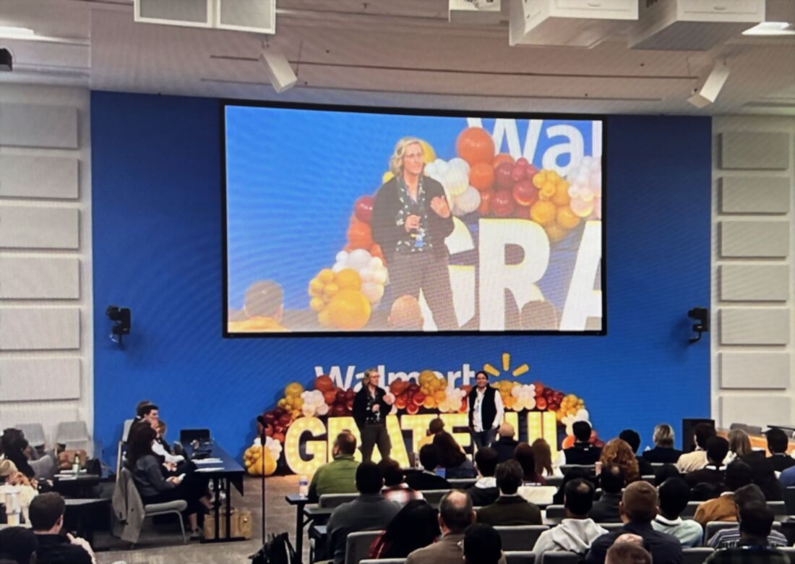

Speaking & Thought Leadership
Presentations & Knowledge Sharing
Invited talks and teaching where I turn complex experience, design-system, and governance work into a shared direction teams and leaders can act on.
Overview
Much of my leadership has started by sharing knowledge — aligning teams and leaders around a clearer way to work. I've been invited to present on experience strategy, design systems, governance, accessibility, and cross-functional collaboration, and several of my leadership opportunities grew directly out of these talks: building the shared understanding, and the coalition, to act on it.
Audiences have ranged from enterprise stakeholders at a Walmart quarterly town hall to designers, developers, faculty, and students at university conferences and in the classroom.

Themes
My presentations generally focus on:
- Accessibility and inclusive design
- Design systems and governance
- UX research and information architecture
- Digital content strategy
- Cross-functional collaboration
- Organizational enablement
- Building communities of practice
- Translating complex topics into practical guidance
Selected Presentations
Accessibility at the Enterprise Business Solutions Town Hall
Walmart Enterprise Business Solutions — Quarterly Town Hall, 2025 (co-presenter)
Co-presented on accessibility to an enterprise audience at a Walmart Enterprise Business Solutions quarterly town hall.
Framed accessibility as part of experience quality and everyday delivery, connecting inclusive design to how large teams build and ship.
Program Explorer: Concept to Delivery to Enhancements
WebCon 2023
A complete walkthrough of the ACES Program Explorer project from initial requirements through implementation and ongoing improvements.
Topics included UX research, information architecture, accessibility, design decisions, user testing, development collaboration, analytics, and iteration.
Digital Design & Accessibility
Friday Morning Caffeine Break
A practical session designed for content creators, communicators, designers, and web professionals interested in building accessibility into their everyday workflow.
Topics included color contrast, typography, content hierarchy, images and alt text, accessible content creation, mobile accessibility, and keyboard accessibility.
Digital Accessibility
College of ACES Undergraduate Courses
Presented digital accessibility concepts to undergraduate students studying agricultural leadership, education, and communication.
The goal was to introduce future communicators and content creators to inclusive design principles early in their careers.
Topics included accessibility fundamentals, inclusive content creation, designing for diverse audiences, and real-world accessibility examples.

How Did They Do That? Under the Hood with Illinois-Themed Websites
IT ProForum 2022
A behind-the-scenes look at how various university websites and applications were built using shared Illinois Theme components.
The session explored how reusable design and development patterns could accelerate delivery while maintaining consistency across campus.
Topics included design systems, shared components, front-end architecture, content management systems, and cross-team collaboration.
Campus Drupal Website Framework
IT ProForum 2021
Introduced a campus-wide Drupal solution designed to simplify website creation while supporting university branding and accessibility requirements.
Topics included Drupal implementation, shared frameworks, design standards, accessibility, and community contribution models.
Cross-Unit Collaborations: When Things Just Have to Get Done
IT ProForum 2021
A presentation focused on how the Web Implementation Guidelines Group (WIGG) formed organically and evolved into a successful cross-campus collaboration.
Topics included building coalitions, volunteer leadership, influence without authority, governance models, and community building.
Illinois Drupal Framework: Coming Together to Create Powerful Websites
IT ProForum 2020
An overview of a collaborative effort to create a scalable Drupal framework supporting campus branding, customization, and future growth.
Topics included framework development, shared ownership, governance, community-driven improvement, and sustainable web operations.
What I Enjoy Most About Presenting
Presenting has always been one of my favorite ways to help organizations improve.
Whether I'm teaching accessibility, introducing a new process, or explaining a complex project, my goal is always the same:
Help people understand not just what to do, but why it matters.
Many of the leadership opportunities I've had throughout my career have started with sharing knowledge, building connections, and helping others gain confidence in new skills and ways of working.
A Recurring Pattern
This work reflects a throughline that connects my experience across higher education, enterprise accessibility, and AI-assisted governance:
I don't just build solutions. I help others understand, adopt, and improve them.